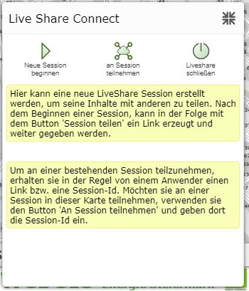
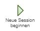
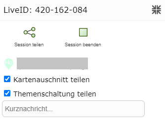
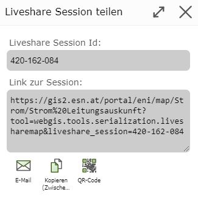
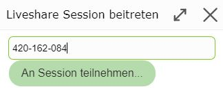
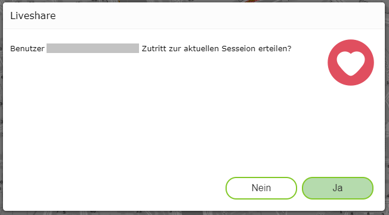
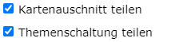
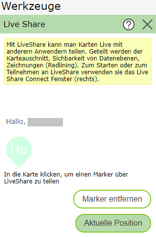
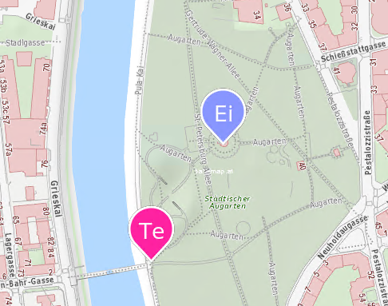

Procedure
Clicking on the Live Share tool opens the following window:

Starting a New Session
First, the session owner must start a new session.

After starting the session, a window opens offering ways to share the session.
In addition, an info window for the current LiveShare session appears at the bottom right.

Sharing a Session
There are various ways to share the LiveShare session:

LiveShare session ID: If you want to join the session via the LiveShare tool. (However, this requires access to a WebGIS map in which the LiveShare tool is available. This is not needed for the other access options.)
Email: Opens the email program, which can then be used to send the access link.
Copy (clipboard): The access link is copied to the clipboard.
QR code: Creates a QR code that contains the access link. This allows easy access via phone.
Facebook: Redirects to Facebook.
Twitter: Redirects to Twitter.
Joining a Session
If a participant opens any of the available options, they are asked whether they want to join the LiveShare session:

The session owner is then asked to confirm each new participant:

Active LiveShare Session
What can be done with the LiveShare tool was already explained in more detail in the previous section. The new options are described here.

If Share map view is selected, the same map view is shown in all sessions.
If Share topic switching is selected, the same topics are shown in all sessions.
Each session participant can set their own marker. To do this, they simply need to click on the map.
Using Current Position, the marker can also be set to the current position.
The marker can be removed again with Remove Marker.


Ending a Session
Using End Session, the owner can end the LiveShare session.
Leaving a Session
Using Leave Session, participants can exit the LiveShare session. This does not end the session.